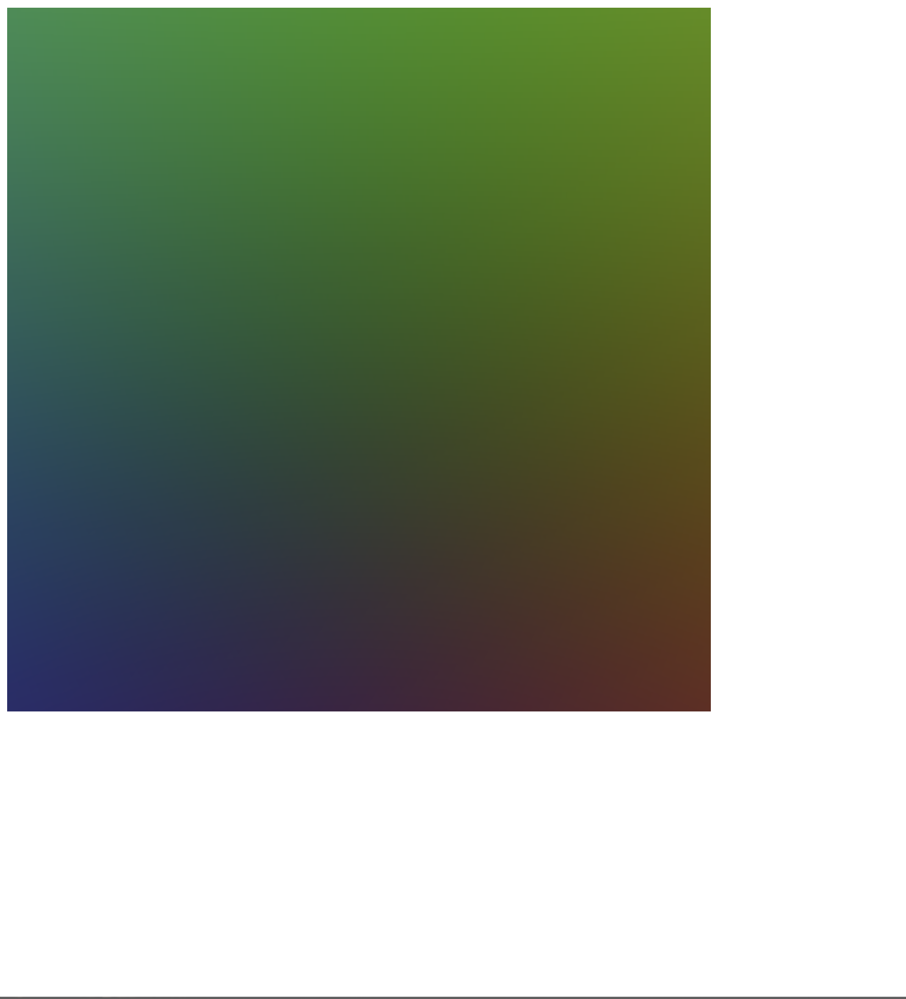
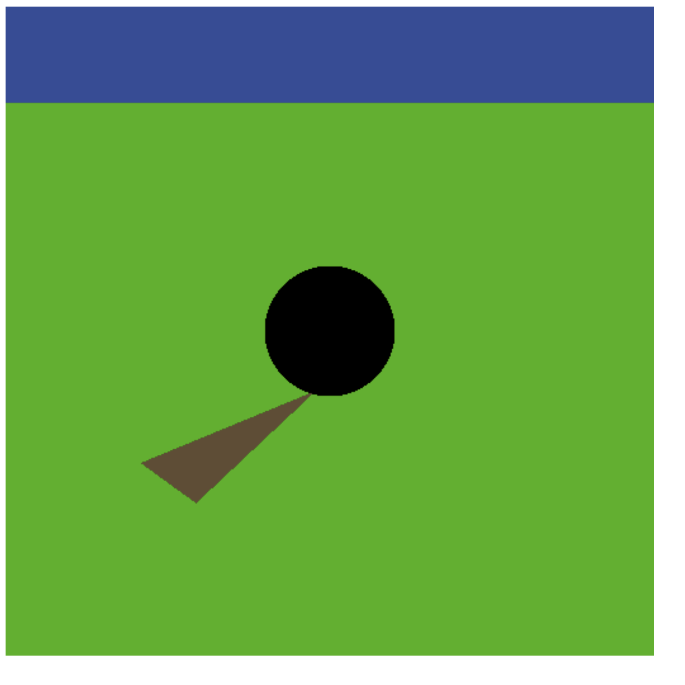
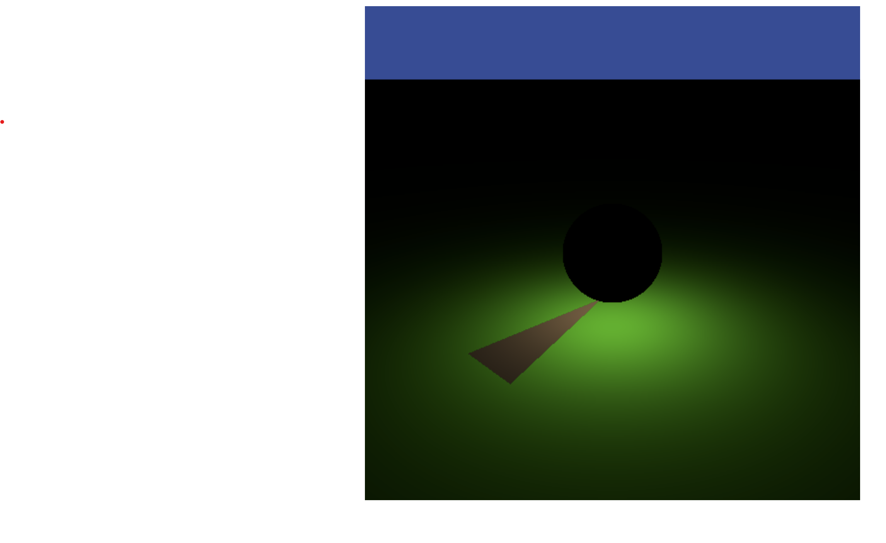
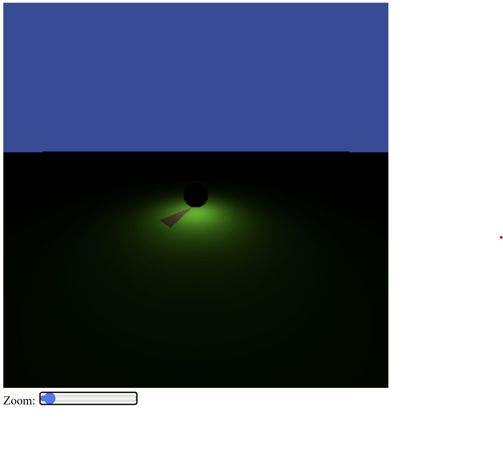

Exercise 1 — Ray generation (pinhole camera)
I first created a 512×512 canvas and initialized WebGPU to render into it. Then I built a minimal pipeline that draws a rectangle (triangle strip) using a WGSL shader.
Compared to just clearing the screen, I switched to a full-screen quad and passed the image-plane coordinates from the vertex shader to the fragment shader. In the fragment shader, I implemented a simple Ray struct and generated rays using a pinhole camera model.
As a debug test, I output the ray direction as RGB (scaled to [0,1]), which produces the expected gradient.
Source code: GitHub – Worksheet 1 / Exercise 1
Exercise 2 — Uniforms and correct aspect ratio
Compared to Exercise 1, I introduced a Uniforms struct to send camera parameters from JavaScript to WGSL. It contains the aspect ratio and the camera constant (zoom).
I also changed the canvas resolution to a non-square size to verify that the aspect ratio is handled correctly. Using MV.js, I precomputed the camera basis vectors (eye position + image plane basis) in JavaScript and uploaded them as uniforms.
This makes ray generation consistent even when the canvas size changes.

Source code: GitHub – Worksheet 1 / Exercise 2
Exercise 3 — Ray intersections (plane, sphere, triangle)
Compared to Exercise 2, I added a HitInfo struct to store intersection results (hit flag, distance, normal, etc.). I then implemented intersection tests for a plane, a sphere, and a triangle.
In the fragment shader, I call these intersection functions to render the default scene. If a ray hits an object, I output its assigned color; otherwise I keep the previous background color.
To ensure correct visibility, I update tmax after a hit so that the renderer keeps only the closest intersection.
Source code: GitHub – Worksheet 1 / Exercise 3
Exercise 4 — Direct lighting (point light + diffuse shading)
Compared to Exercise 3, I implemented actual shading instead of flat object colors. I added a Light struct that returns the incident radiance Li, the light direction, and the distance.
I implemented a point light sampling function using Kepler’s inverse-square law, and a diffuse shading function using Lambert’s cosine law. The final pixel color stores the observed radiance Lo.
Source code: GitHub – Worksheet 1 / Exercise 4
Exercise 5 — Zoom interface
Finally, I added a simple HTML/JavaScript interface (slider / mouse wheel) to control the camera constant. When the zoom value changes, the uniforms are updated and the scene is re-rendered.
Optionally, gamma correction can also be controlled through the UI to adjust the final display.
Source code: GitHub – Worksheet 1 / Exercise 5